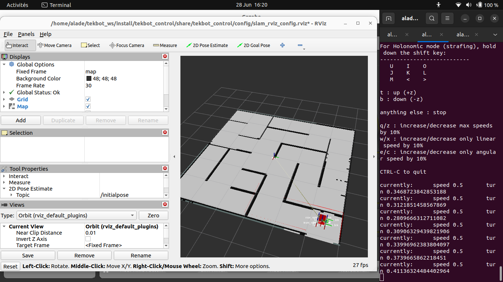

Documentation Complète : Algorithme Pathfinding (ROS2 Humble)
SOMMAIRE Cliquez ici !
1. Introduction et objectifs
L'Algorithme Pathfinding est un système de planification de trajectoire pour robots autonomes, conçu pour optimiser la navigation dans des environnements complexes. Ce module utilise des algorithmes de pathfinding éprouvés et des outils de navigation ROS2 pour garantir une navigation sûre et efficace.
Objectifs :
- 🎯 Fournir des algorithmes de pathfinding optimaux pour la navigation robotique
- 🗺️ Intégrer SLAM et Nav2 pour la cartographie et navigation autonome
- ⚡ Permettre le calcul de trajectoires rapides et sûres
- 🔬 Offrir une plateforme de test pour les algorithmes de navigation classiques
- 🤖 Assurer une compatibilité parfaite avec l'écosystème ROS2
2. Prérequis et installation
- ROS2 Humble sur Ubuntu 22.04
- Gazebo Fortress ou version ultérieure
- Dépendances :
sudo apt install ros-humble-gazebo-ros-pkgs \ ros-humble-nav2-bringup \ ros-humble-slam-toolbox \ ros-humble-nav2-planner \ ros-humble-nav2-controller - Installation du package Pathfinding :
mkdir -p ~/pathfinding_ws/src cd ~/pathfinding_ws/src git clone https://github.com/ucaotech/pathfinding_algorithm.git cd ~/pathfinding_ws colcon build --symlink-install
3. Architecture du projet
pathfinding_algorithm/
├── algorithms/ # Implémentations des algorithmes de pathfinding
│ ├── astar/ # Algorithme A* et ses variantes
│ ├── dijkstra/ # Algorithme de Dijkstra
│ ├── rrt/ # Rapidly-exploring Random Tree
│ └── hybrid/ # Algorithmes hybrides
├── config/ # Fichiers de configuration
├── launch/ # Fichiers de lancement ROS2
├── maps/ # Cartes pour la navigation
├── params/ # Paramètres des algorithmes
├── rviz/ # Configurations RViz
├── scripts/ # Scripts utilitaires
├── src/ # Code source principal
├── tests/ # Tests unitaires
├── worlds/ # Environnements de simulation
├── package.xml # Métadonnées du package
└── CMakeLists.txt # Configuration de build4. Fonctionnalités principales
4.1 Algorithmes Avancés
Implémentation optimisée des meilleurs algorithmes de pathfinding : A*, Dijkstra, RRT*, et algorithmes hybrides.
4.2 Navigation Avancée
Intégration avec Nav2 pour SLAM, localisation et planification de trajectoire avec optimisation des coûts.
4.3 Visualisation Temps Réel
Interface RViz pour visualiser les algorithmes en action, les trajectoires calculées et les métriques de performance.
4.4 Benchmarking
Outils de comparaison et d'évaluation des performances des différents algorithmes de pathfinding.
5. Guide d'utilisation
5.1 Lancer l'algorithme de pathfinding
ros2 launch pathfinding_algorithm pathfinding.launch.py5.2 Contrôle et test manuel
ros2 run teleop_twist_keyboard teleop_twist_keyboard5.3 Navigation autonome avec pathfinding
ros2 launch pathfinding_algorithm navigation.launch.py6. Outils et Technologies Avancées
🛠️ Stack Technologique Avancée
| Technologie | Catégorie | Description Avancée | Performance |
|---|---|---|---|
| 🧠 SLAM Toolbox | Cartographie | Simultaneous Localization and Mapping pour cartographie en temps réel et localisation précise | ⭐⭐⭐⭐⭐ |
| 🚀 Nav2 | Navigation | Stack de navigation complète avec planificateurs de chemins, contrôleurs et recovery behaviors | ⭐⭐⭐⭐⭐ |
| 🎮 Téléopération | Contrôle Manuel | Interface de contrôle manuel avec feedback en temps réel et safety features | ⭐⭐⭐⭐ |
| 🎯 Algorithme A* | Pathfinding | Algorithme classique de recherche de chemin optimal avec heuristiques personnalisables | ⭐⭐⭐⭐⭐ |
| 🌟 RRT* | Planification | Rapidly-exploring Random Tree optimal pour planification dans espaces complexes | ⭐⭐⭐ |
6.1 Algorithmes de Pathfinding
🎯 Algorithmes Classiques
- A* : Recherche heuristique optimale
- Dijkstra : Plus court chemin garanti
- D* Lite : Replanification dynamique
- Theta* : Chemins any-angle
🌐 Algorithmes Sampling
- RRT : Rapidly-exploring Random Tree
- RRT* : Version asymptotiquement optimale
- PRM : Probabilistic Road Map
- EST : Expansive Space Trees
⚡ Optimisations
- Smoothing : Lissage de trajectoires
- Cost Maps : Cartes de coût adaptatives
- Multi-resolution : Planification hiérarchique
- Parallel Processing : Calcul parallèle
7. Exemples Pratiques et Médias
7.1 Cartographie SLAM
Commandes de lancement
# Lancement SLAM avec Toolbox
ros2 launch pathfinding_algorithm slam.launch.py
# Sauvegarde de carte
ros2 run nav2_map_server map_saver_cli \
-f ~/maps/my_map
# Navigation avec carte existante
ros2 launch pathfinding_algorithm navigation.launch.py \
map:=~/maps/my_map.yaml📸 Carte Générée par SLAM

Photo de la carte 2D générée lors de la phase de cartographie SLAM
7.2 Téléopération et Contrôle Manuel
Contrôle manuel
# Téléopération par clavier
ros2 run teleop_twist_keyboard teleop_twist_keyboard
# Téléopération par joystick (optionnel)
ros2 launch pathfinding_algorithm joy_teleop.launch.py• WASD : Mouvement directionnel
• Q/E : Rotation gauche/droite
• Shift + mouvement : Mode précision
• Espace : Arrêt d'urgence
• X : Arrêt progressif
🎥 Démonstration Téléopération
Emplacement réservé :
7.3 Navigation Autonome avec A*
Lancement navigation autonome
# Navigation avec A*
ros2 launch pathfinding_algorithm navigation.launch.py \
global_planner:=astar \
local_planner:=dwa
# Navigation avec RRT*
ros2 launch pathfinding_algorithm navigation.launch.py \
global_planner:=rrt_star \
local_planner:=tebSuivi de waypoints
# Waypoint follower simple
ros2 run pathfinding_algorithm smart_waypoint_follower \
--optimization_mode continuous \
ros2 run pathfinding_algorithm waypoint_follower \
--waypoints_file ~/waypoints.yaml \
--replanning_frequency 10.0Algorithmes Pathfinding - Analyse Détaillée
- 🎯 Entrées : Position, objectif, carte statique, contraintes cinématiques
- ⚙️ Processus :
• Phase 1: Planification globale (A* ou RRT*)
• Phase 2: Optimisation locale (DWA ou TEB)
• Phase 3: Lissage trajectoire (splines)
• Phase 4: Validation sécurité (collision checking) - 📈 Sorties : Trajectoire optimisée, commandes vitesse, métriques performance
- 🔄 Fonctionnalités :
• Replanification dynamique en cas d'obstacle
• Adaptation aux contraintes du robot
• Optimisation multi-critères (temps, énergie, sécurité)
• Support différents types d'environnements - ⚡ Performance : < 100ms pour replanification, < 10ms pour ajustements locaux
8. Référence API
| Topic | Type | Description |
|---|---|---|
| /cmd_vel | geometry_msgs/Twist | Commande de vitesse |
| /scan | sensor_msgs/LaserScan | Données LiDAR |
| /camera/image_raw | sensor_msgs/Image | Flux vidéo |
| /odom | nav_msgs/Odometry | Odometrie |
9. Dépannage
Solution : Vérifiez les variables d'environnement et les dépendances
export GAZEBO_MODEL_PATH=$GAZEBO_MODEL_PATH:~/pathfinding_ws/src/pathfinding_algorithm/modelsros2 launch pathfinding_algorithm gazebo.launch.py headless:=true10. Guide de contribution
- Forkez le dépôt GitHub
- Créez une branche pour votre fonctionnalité
- Soumettre une Pull Request avec :
- Description des changements
- Tests unitaires
- Documentation mise à jour
11. Licence et crédits
Licence : Apache 2.0
Équipe : UCAO-TECH 2025
Contributeurs : Liste complète dans CONTRIBUTORS.md